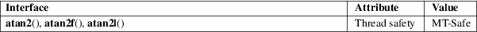

atan2, atan2f, atan2l − arc tangent function of two variables
Math library (libm, −lm)
#include <math.h>
double
atan2(double y, double x);
float atan2f(float y, float x);
long double atan2l(long double y, long
double x);
Feature Test Macro Requirements for glibc (see feature_test_macros(7)):
atan2f(),
atan2l():
_ISOC99_SOURCE || _POSIX_C_SOURCE >= 200112L
|| /* Since glibc 2.19: */ _DEFAULT_SOURCE
|| /* glibc <= 2.19: */ _BSD_SOURCE || _SVID_SOURCE
These functions calculate the principal value of the arc tangent of y/x, using the signs of the two arguments to determine the quadrant of the result.
On success, these functions return the principal value of the arc tangent of y/x in radians; the return value is in the range [−pi, pi].
If y is +0 (−0) and x is less than 0, +pi (−pi) is returned.
If y is +0 (−0) and x is greater than 0, +0 (−0) is returned.
If y is less than 0 and x is +0 or −0, −pi/2 is returned.
If y is greater than 0 and x is +0 or −0, pi/2 is returned.
If either x or y is NaN, a NaN is returned.
If y is +0 (−0) and x is −0, +pi (−pi) is returned.
If y is +0 (−0) and x is +0, +0 (−0) is returned.
If y is a finite value greater (less) than 0, and x is negative infinity, +pi (−pi) is returned.
If y is a finite value greater (less) than 0, and x is positive infinity, +0 (−0) is returned.
If y is positive infinity (negative infinity), and x is finite, pi/2 (−pi/2) is returned.
If y is positive infinity (negative infinity) and x is negative infinity, +3*pi/4 (−3*pi/4) is returned.
If y is positive infinity (negative infinity) and x is positive infinity, +pi/4 (−pi/4) is returned.
No errors occur.
For an explanation of the terms used in this section, see attributes(7).

C11, POSIX.1-2008.
C99, POSIX.1-2001.
The variant returning double also conforms to SVr4, 4.3BSD, C89.
acos(3), asin(3), atan(3), carg(3), cos(3), sin(3), tan(3)